Mission 3
Réinitialisation d’un appareil Windows via Intune et Autopilot
1. Présentation générale
Cette mission porte sur la réinitialisation d’un appareil Windows géré par Microsoft Intune. L’objectif est de remettre un poste dans un état propre afin qu’il puisse être réutilisé, réattribué à un utilisateur ou réintégré correctement dans l’environnement professionnel.
Plusieurs méthodes peuvent être utilisées selon l’état du poste : la réinitialisation classique appelée wipe, la réinitialisation Autopilot, ou une méthode alternative lorsque les procédures classiques ne fonctionnent pas correctement.
2. Contexte de l’intervention
Dans un environnement d’entreprise, il est fréquent de devoir réinitialiser un ordinateur lorsqu’il change d’utilisateur, lorsqu’il présente un dysfonctionnement ou lorsqu’il doit être réintégré dans une stratégie de gestion moderne via Microsoft Intune.
Cette intervention permet de garantir que l’appareil est correctement nettoyé, que les anciennes données ne sont plus présentes et que le poste peut être préparé de nouveau dans un cadre sécurisé.
3. Procédure de réinitialisation classique : Wipe
Étape 1 – Lancement du wipe depuis Intune
La première étape consiste à lancer la réinitialisation de l’appareil directement depuis Microsoft Intune. Cette action permet d’envoyer une demande de wipe au poste concerné afin de supprimer les données et de remettre l’ordinateur dans un état propre.
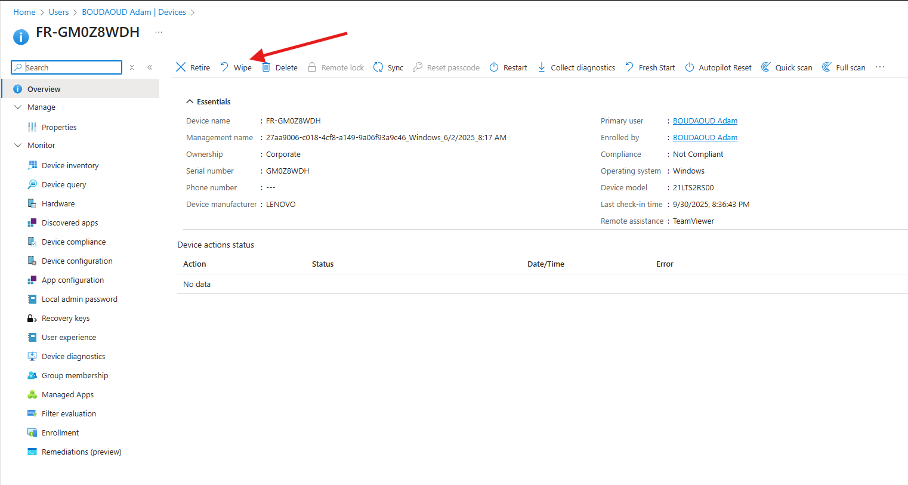
Étape 2 – Synchronisation manuelle du compte sur le PC
Sur le PC local, il est nécessaire d’effectuer une synchronisation manuelle du compte professionnel. Pour cela, ouvrir les paramètres Windows, accéder à Comptes, puis à Accès professionnel ou scolaire. Il faut ensuite cliquer sur le compte connecté et sélectionner Informations.
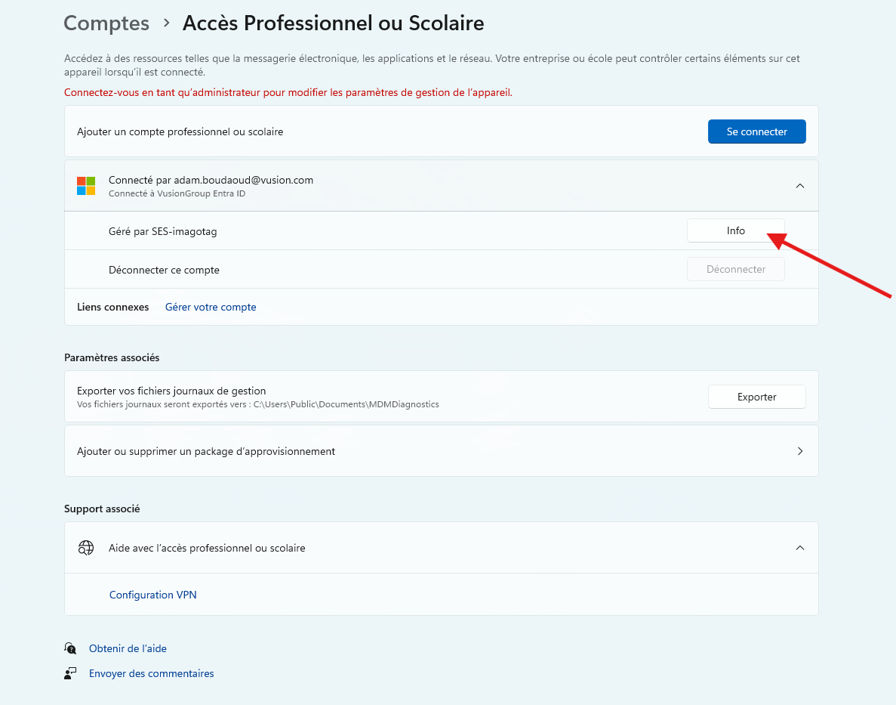
En bas de la page, cliquer sur Synchroniser afin de forcer la communication entre le poste et Intune. Une fois la synchronisation terminée, il faut redémarrer l’ordinateur pour permettre à l’action de réinitialisation de se lancer correctement.
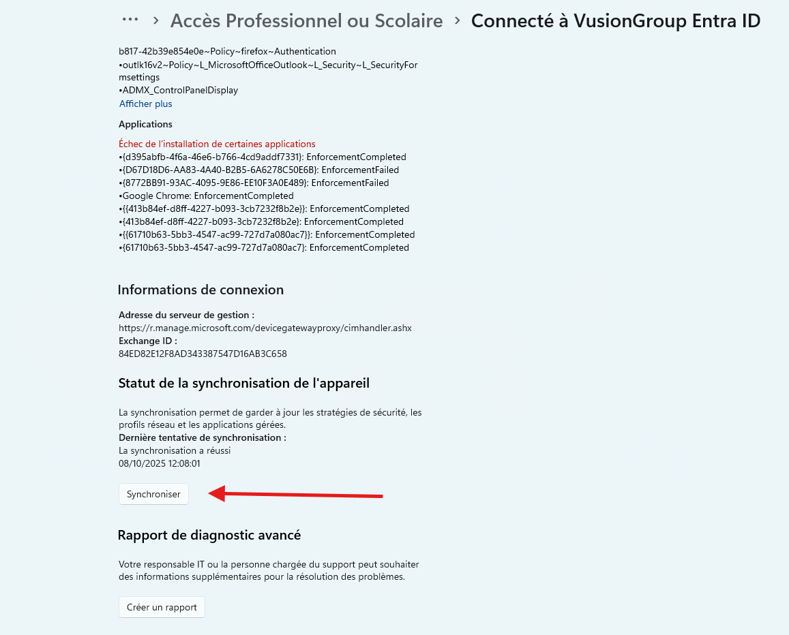
Étape 3 – Cas où la réinitialisation ne démarre pas
Si l’utilisateur ne peut pas se connecter à une session et que la réinitialisation ne démarre toujours pas, il faut supprimer l’appareil du portail Intune. Cette action permet de retirer l’équipement de la gestion Intune afin de repartir sur une base propre.
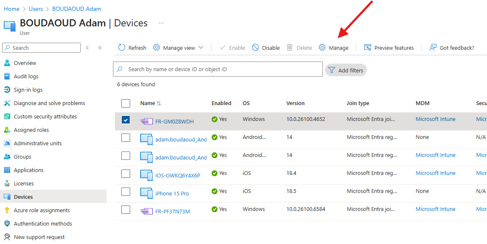
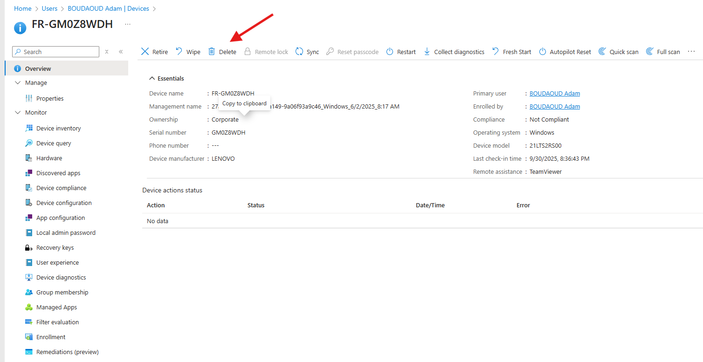
Dans ce cas, il est également possible de créer une clé USB d’installation Windows 11 Pro à l’aide de l’outil Media Creation Tool. Il faut ensuite suivre les instructions officielles de Microsoft pour créer un support d’installation Windows.
4. Procédure de réinitialisation Autopilot
Étape 1 – Accès à l’appareil dans Intune
Pour utiliser la réinitialisation Autopilot, il faut accéder à l’appareil concerné dans Microsoft Intune, puis sélectionner l’option Gérer. Cette méthode permet de réinitialiser l’appareil tout en conservant son rattachement à l’environnement de gestion de l’entreprise.
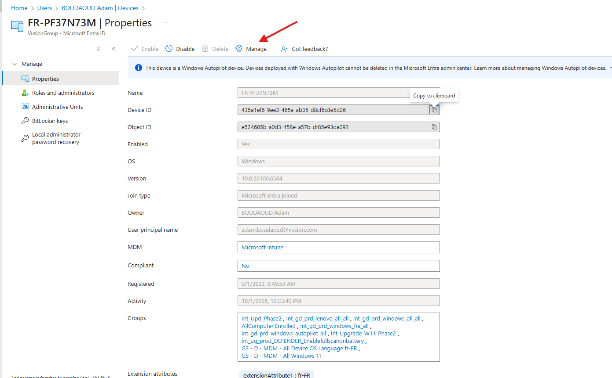
Étape 2 – Accès à la section Windows
Depuis le portail Intune, il faut ensuite aller dans Accueil, puis Devices, Windows et Windows. Cette section regroupe les appareils Windows gérés par l’entreprise.
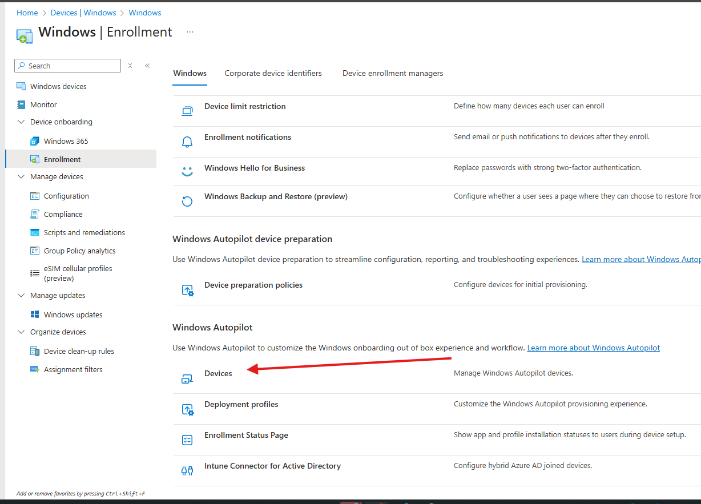
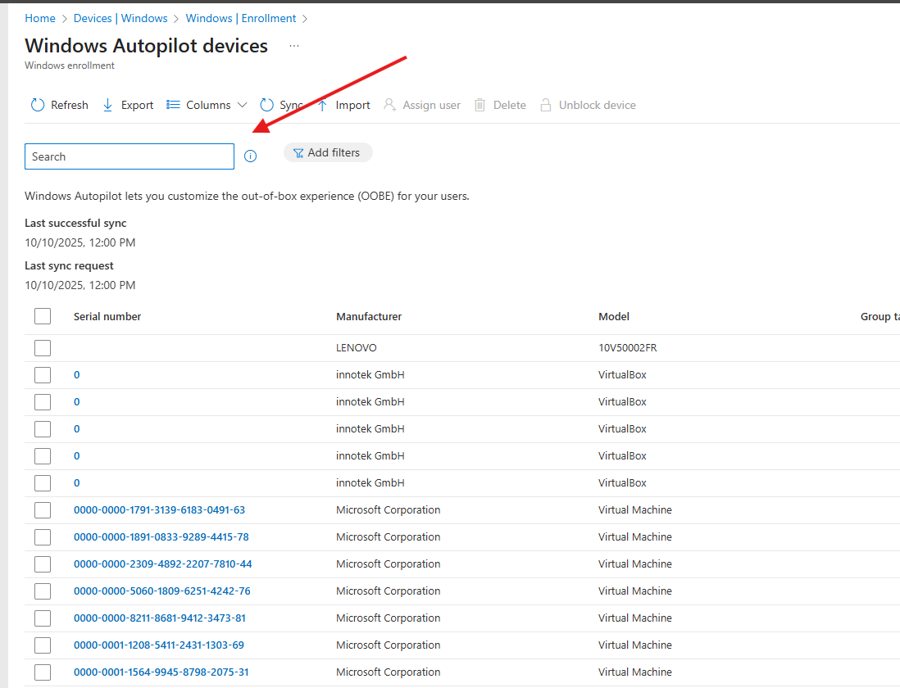
Étape 3 – Vérification de la connexion réseau
Avant de lancer la réinitialisation Autopilot, il est important de vérifier que le PC est correctement connecté au réseau. L’idéal est d’utiliser une connexion Ethernet avec un câble réseau, car cela permet d’assurer une connexion stable pendant tout le processus.
Étape 4 – Redémarrage du service Intune Management Extension
Pour faciliter la réinitialisation Autopilot, il est possible d’ouvrir l’Invite de commandes en tant qu’administrateur et d’exécuter la commande suivante afin de redémarrer le service Intune Management Extension.
net stop "IntuneManagementExtension" && net start "IntuneManagementExtension"
Étape 5 – Lancement de l’Autopilot Reset
Une fois les vérifications effectuées, sélectionner l’option Autopilot Reset. Le PC redémarrera ensuite automatiquement afin de lancer la procédure de réinitialisation.
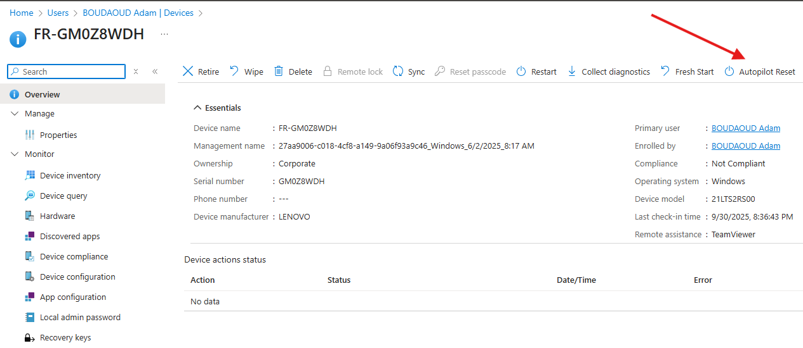
5. Méthode alternative de réinitialisation
Il existe également une autre méthode, plus simple mais plus longue à mettre en place. Cette méthode est utilisée lorsque les autres techniques ne fonctionnent pas. Elle permet de réinitialiser un PC manuellement en récupérant les informations d’administration locale depuis Microsoft Entra.
Pour commencer, allumer le PC et ajouter un compte. Il faut ensuite se connecter sur l’ordinateur avec son propre compte afin d’accéder à l’environnement Windows.
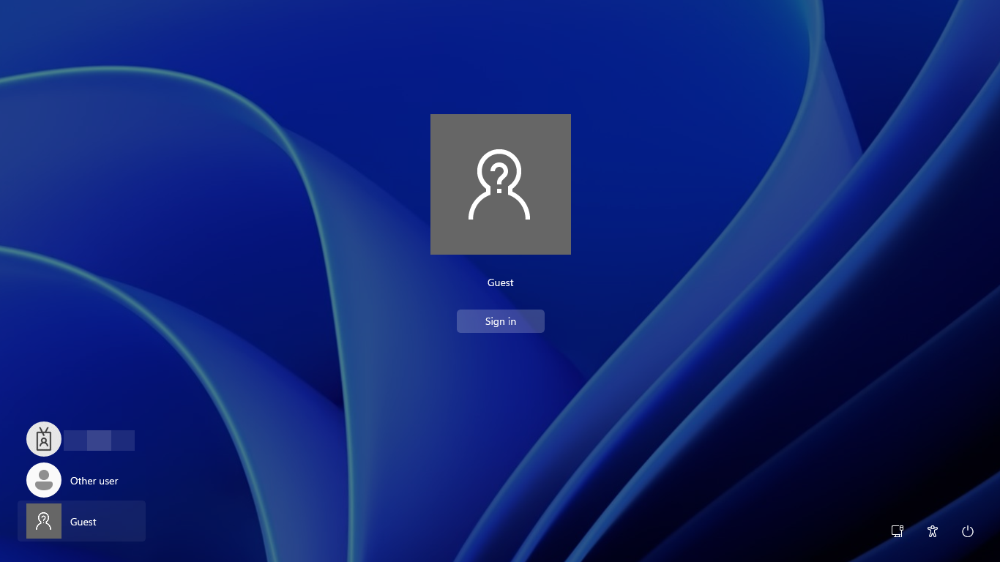
Une fois le compte ajouté, attendre quelques instants que tous les éléments se chargent correctement. Si un problème apparaît pendant cette étape, cliquer sur Continuer quand même afin de poursuivre la procédure.
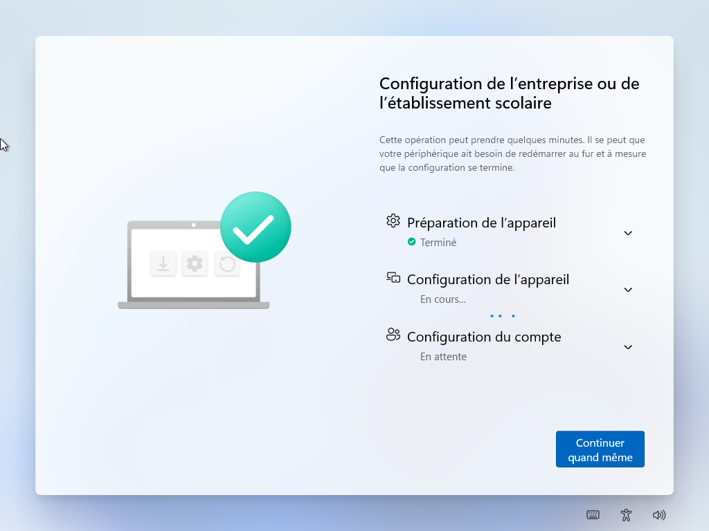
Étape 1 – Accès à la réinitialisation locale du PC
Une fois sur le bureau Windows, ouvrir les Paramètres. Dans la barre de recherche, taper Réinitialiser ce PC, puis cliquer sur Réinitialiser. Cette action permet de lancer la procédure de remise à zéro directement depuis Windows.


Étape 2 – Demande d’identifiants administrateur
Le système demande ensuite une adresse e-mail et un mot de passe. Ces informations correspondent aux identifiants du compte administrateur local récupérables depuis Microsoft Entra.

Étape 3 – Récupération du mot de passe administrateur local dans Microsoft Entra
Pour récupérer ces informations, il faut se rendre dans Microsoft Entra, accéder à Devices puis All Devices. Il faut ensuite rechercher le numéro de série du PC, sélectionner l’appareil correspondant, puis accéder à Local administrator password recovery.
Depuis cette section, cliquer sur Show local admin password. Un panneau s’ouvre alors sur le côté droit de l’écran et affiche le mot de passe ainsi que le nom du compte administrateur local.


Étape 4 – Connexion avec le compte administrateur local
Lors de la connexion, il faut toujours saisir le nom du compte au format suivant :
.\NomDuCompte
Une fois connecté avec le compte administrateur local, cliquer sur Reset all. Il ne reste ensuite plus qu’à attendre la fin du processus de réinitialisation.
6. Résultat attendu
À la fin de la procédure, le PC est réinitialisé et prêt à être réutilisé ou réintégré dans l’environnement de l’entreprise. Selon la méthode utilisée, l’appareil peut être remis à zéro depuis Intune, via Autopilot Reset ou directement depuis Windows avec les identifiants administrateur locaux récupérés dans Microsoft Entra.
Cette mission m’a permis de mieux comprendre les différentes méthodes de réinitialisation d’un poste Windows, le rôle d’Intune dans la gestion des appareils et l’importance de disposer de procédures alternatives lorsque les méthodes classiques ne fonctionnent pas.